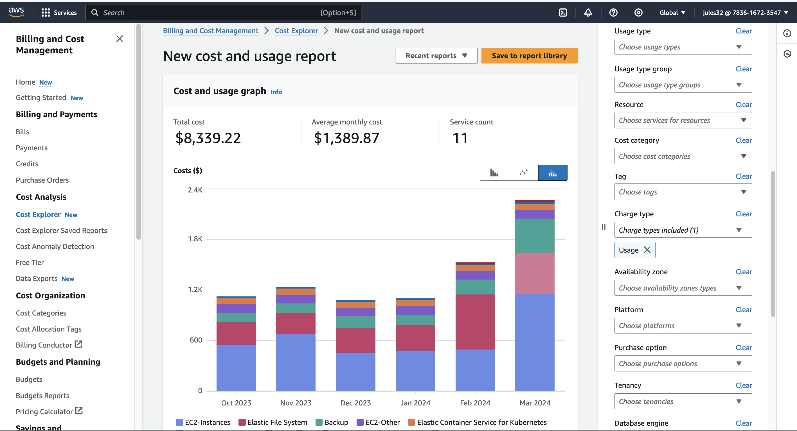
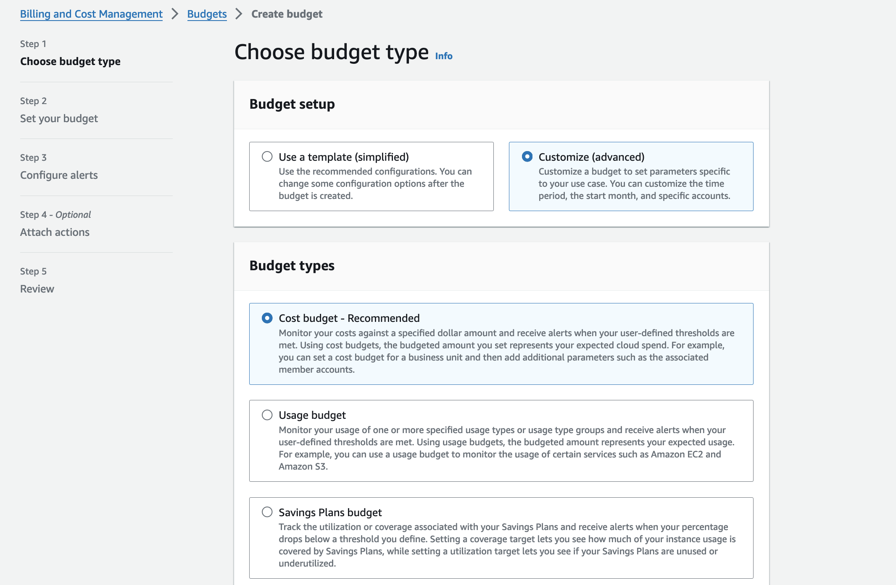
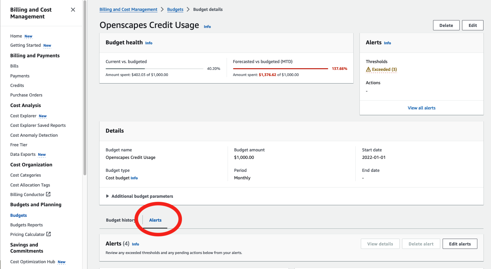

Policies & Administration
Access Policies
Introduction
A key objective of NASA Openscapes is to minimize “the time to science” for researchers. Cloud infrastructure can facilitate shortening this time. We use a 2i2c-managed JupyterHub, which lets us work in the cloud next to NASA Earthdata in AWS US-West-2. The purpose of the JupyterHub is to provide initial, exploratory experiences accessing NASA Earthdata in the cloud. It is not meant to be a long-term solution to support on-going science work or software development. For those users that decide working in the Cloud is advantageous and want to move there, we support a migration from the Hub to their own environment through Coiled.io.
Hub Management: 2i2c is a nonprofit that designs, develops, and operates JupyterHubs in the cloud for research and education, including NASA Openscapes. 2i2c ensures that Hubs are cloud-vendor agnostic and are built using open-source software such as JupyterHub and Kubernetes.
User Management and Access: 2i2c manages users through GitHub Teams within the NASA-Openscapes GitHub organization. This requires new users to accept an invitation from NASA-Openscapes. Following that acceptance, the user can then log on to the 2i2c Hub with their Github credentials. Using the NASA Openscapes Hub, the only software requirement to launch the Hub are access to a computer and the internet.
Hub Location and Right to Replicate: Our Openscapes JupyterHub is built on top of AWS and is in-region with NASA Earthdata (AWS US-West-2). 2i2c gives users the right to replicate their infrastructure. This means that our Hub could be replicated on GoogleEarthEngine or Microsoft Azure, or ported to another AWS region.
With this setup, we have flexibility to support a broad range of user needs. The 2i2c Openscapes Hub has been used by the NASA-Openscapes Mentors and other NASA DAAC staff internally as a testing ground for developing cloud tutorials and workflows, but also externally in the research community for workshops like those for science teams and “Hackathons”, a term used here to describe multi-day events with split time for teaching and helping researchers implement concepts into their research projects.
This section drew from the ‘Solution’ section of the White Paper entitled, “The Value of Hosted JupyterHubs in enabling Open NASA Earth Science in the Cloud” (Nickles, et.al, 2022).
Obtaining Access to the NASA Openscapes Hub
Access is controlled by the NASA Openscapes Team, who oversee the management of the Hub and Cloud costs. The first step to gaining access to the NASA Openscapes 2i2c Hub is to request access via this form.
Our JupyterHub users are managed in three GitHub Teams:
- Long-term access: This access is for NASA Openscapes mentors and team, DAAC staff and others who request a longer-term engagement
- NASA Openscapes Champions: This access is for teams that participate in the NASA Openscapes Champions Program. These teams have access for up to a year as they migrate their workflows to the Cloud.
- Workshops and Hackathons: This provides short term access of up to 1-month to participants of NASA Earthdata workshops. Participants will be removed at any time and have no expectation of on-going storage in their home directories.
Instructions for admins on how to add people to the hub can be found here.
Allowable Uses of 2i2c Hub
Users who join these GitHub teams agree to use the NASA Openscapes Hub only for work on NASA EarthData related activities. Generally, recommended instance size is the smallest instance (1.9GB RAM and up to 3.75 CPUs).
Run large or parallel jobs over large geographic bounding boxes or over long temporal extents should be cleared with the NASA Openscapes Team by submitting an issue to the 2i2cAccessPolicies repository.
Removal From the NASA Openscapes Hub
The NASA Openscapes Hub is a shared, limited resource that incurs real costs. Users are granted access in the terms above and are removed at the end of those limits. Users that haven’t accessed the Hub in more than six months are also removed for security purposes.
We will do our best to alert users before they lose access to the NASA Openscapes Hub. However, we reserve the right to remove users at any time for any reason. Users that violate the terms of access or incur large Cloud costs without prior permission from the NASA Openscapes Team will be removed immediately.
Data storage policies
Policies on data storage and use of the HOME directory can be found in the data policies page.
Monitoring cloud usage costs
AWS Cost Explorer
This is a work in progress, currently with minimal steps and screenshots that we will augment.
AWS Cost Explorer lets you examine how much your usage costs. When using Credits, your usage does not immediately show up. Select Charge type as “Usage” from the right menu.

AWS Budgeting Alerts
This is a work in progress, currently with minimal steps and screenshots that we will augment.
There are two types of alerts we set up.
Budgeting alerts
When adding new Cloud credits to our AWS account, we also create a budget and alerts (received via email) as we spend our credits. These are some beginning notes (credit and thank you to Joe Kennedy!).
Create an annual budget of the total Credits left (you may need to calculate this if credits rolled over at the beginning of the calendar year). In the Budget menu, create a Budget. Then select Customize and Cost budget.

Exclude Credits and Refunds, include Discounts. You can elect to receive emails with a regular cadence: weekly, monthly.
We set these up at 50, 75, 90, 95% of the total budget, and we will receive emails at those percentages. The thinking is that we will need to request more credits starting at 50-75%, and then make sure we have them in hand by 90-95%.
Threshold alerts
We can also set up email alerts at certain dollar amounts.

We receive emails when we spend $100, $200, $500 of our Credits, which show up in the system as $1000 intervals.